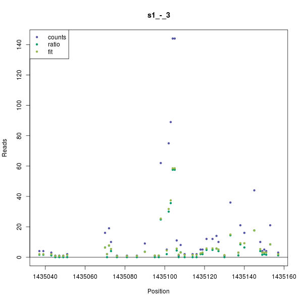
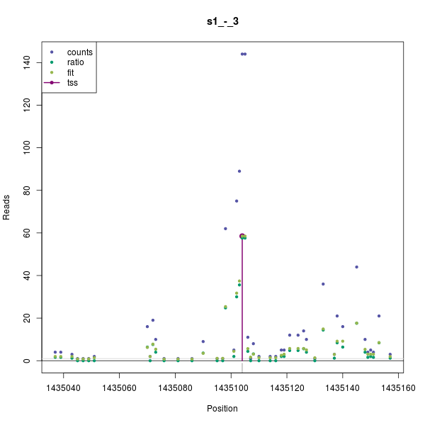
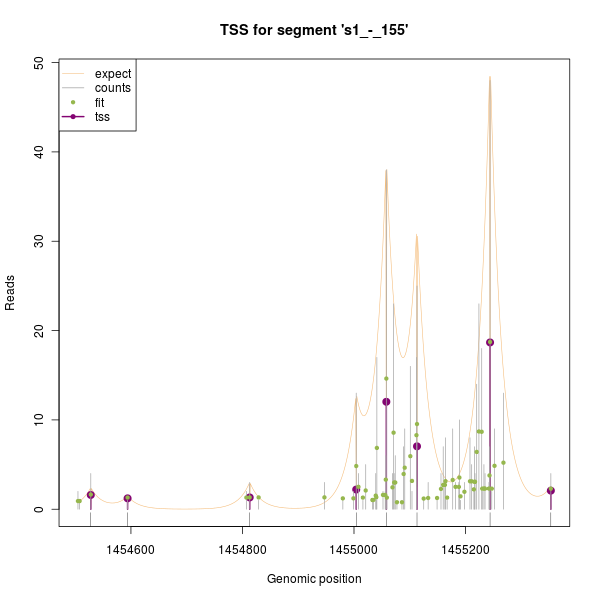

Identification of Transcription Start Sites with the TSSi package
Table of Contents
Abstract
Along with the advances in high-throughput sequencing, the detection of transcription start sites TSS using CAP-capture techniques has evolved recently. While many experimental applications exist, the analysis of such data is still non-trivial. Approaching this, the TSSi package offers a flexible statistical preprocessing for CAP-capture data and an automated identification of start sites.
Introduction
High throughput sequencing has become an essential experimental approach to investigate genomes and transcriptional processes. While cDNA sequencing (RNA-seq) using random priming and/or fragmentation of cDNA will result in a shallow distribution of reads typically biased towards the 3’ end, approaches like CAP-capture enrich 5’ ends and result in more clearly distinguishable peaks around the transcription start sites.
Predicting the location of transcription start sites TSS is hampered by the existence of alternative TSS, i.e. their number within regions of transcription is unknown. In addition, measurements contain false positive counts. Therefore, only the counts which are significantly larger than an expected number of background reads are intended to be predicted as TSS. The number of false positive reads increases in regions of transcriptional activity and such reads obviously do not map to random positions. On the one hand, these reads seem to occur sequence dependently and therefore cluster to certain genomic positions, on the other hand they are detected more frequently than being originated from real TSS. Because currently, there is no error model available describing such noise, the TSSi package implements an heuristic approach for an automated and flexible prediction of TSS.
Data set
In this vignette we use experimental CAP-capture data obtained with Solexa sequencing. The data was mapped to the genome using the bowtie algorithm and processed, such that the number of the 5' end of reads for each position are available. The data frame readData contains the chromosome, the strand, the 5' position of the reads, and the total number of reads at that position. Further, regions based on existing annotation are also provided which are used to divide the data into independent subsets for analysis.
library(TSSi)
data(physcoCounts) head(physcoCounts)
chromosome region start strand counts 1 s1 1 82747 + 3 2 s1 1 82771 + 1 3 s1 1 82853 + 7 4 s1 1 82854 + 6 5 s1 1 82875 + 4 6 s1 1 82898 + 5
Segment read data
As a first step in the analysis, the read data is taken by the segmentizeCounts method. Here, the data is divided into segments, for which the following analysis is performed independently. This is done based on the information of the chromosomes, the strands, and the optional regions. The segmented data is returned as an object of the class TssData.
attach(physcoCounts) x <- segmentizeCounts(counts=counts, start=start, chr=chromosome, region=region, strand=strand) detach(physcoCounts)
x
* Object of class 'TssData' * Data imported ** Segments ** Segments (5): s1_+_1, s1_+_2, s1_-_3, s2_+_4, s2_-_5 Chromosomes (2): s1, s2 Strands (2): +, - Regions (5): 1, 2, 3, 4, 5 nCounts (5): 978, 587, 848, 466, 690
The final segments and the associated read data can be assessed with several get methods. The data from individual segments can be called either by its name or an index. Each segment can easily be visualized with the plot method.
segments(x)
chr strand region nPos nCounts start end
s1_+_1 s1 + 1 28 978 82747 82994
s1_+_2 s1 + 2 33 587 814741 815042
s1_-_3 s1 - 3 47 848 1435037 1435157
s2_+_4 s2 + 4 68 466 1454505 1455353
s2_-_5 s2 - 5 43 690 1574882 1575467
names(x)
[1] "s1_+_1" "s1_+_2" "s1_-_3" "s2_+_4" "s2_-_5"
head(reads(x, 3))
start end counts replicate
62 1435037 1435037 4 1
63 1435039 1435039 4 1
64 1435043 1435043 3 1
65 1435045 1435045 1 1
66 1435047 1435047 1 1
67 1435049 1435049 1 1
head(start(x, 3))
[1] 1435037 1435039 1435043 1435045 1435047 1435049
head(start(x, names(x)[3]))
[1] 1435037 1435039 1435043 1435045 1435047 1435049
Normalization
The normalization reduces the noise by shrinking the counts towards zero. This step is intended to eliminate false positive counts as well as making further analyzes more robust by reducing the impact of large counts. Such a shrinkage or regularization procedure constitutes a well-established strategy in statistics to make predictions conservative, i.e. to reduce the number of false positive predictions. To enhance the shrinkage of isolated counts in comparison to counts in regions of strong transcriptional activity, the information of consecutive genomic positions in the measurements is regarded by evaluating differences between adjacent count estimates.
The computation can be performed with a fast approximation of the distribution based on all reads, or fitted explicitly for each segment. On platforms supporting the multicore package, the fitting can be spread over multiple processor cores in order to decrease computation time.
yRatio <- normalizeCounts(x)
yFit <- normalizeCounts(x, fit=TRUE) yFit
* Object of class 'TssNorm' * Data normalized ** Segments ** Segments (5): s1_+_1, s1_+_2, s1_-_3, s2_+_4, s2_-_5 Chromosomes (2): s1, s2 Strands (2): +, - Regions (5): 1, 2, 3, 4, 5 nCounts (5): 978, 587, 848, 466, 690 ** Parameters ** pattern: %1$s_%2$s_%3$s offset: 10 basal: 1e-04 lambda: c(1, 1) fit: TRUE optimizer: all
head(reads(yFit, 3))
start end counts ratio fit
1 1435037 1435037 4 1.60000 1.9855049
2 1435039 1435039 4 1.60000 1.9855051
3 1435043 1435043 3 1.19999 1.9766483
4 1435045 1435045 1 0.00010 0.8232838
5 1435047 1435047 1 0.00010 0.8232832
6 1435049 1435049 1 0.00010 0.8249313
plot(yFit, 3)

Figure 1
Identifying transcription start sites
After normalization of the count data, an iterative algorithm is applied for each segment to identify the TSS. The expected number of false positive counts is initialized with a default value given by the read frequency in the whole data set. The position with the largest counts above is identified as a TSS, if the expected transcription level is at least one read above the expected number of false positive reads. The transcription levels for all TSS are calculated by adding all counts to their nearest neighbor TSS.
Then, the expected number of false positive reads is updated by convolution with exponential kernels. The decay rates tau in 3' direction and towards the 5'-end can be chosen differently to account for the fact that false positive counts are preferably found in 5' direction of a TSS. This procedure is iterated as long as the set of TSS increases.
z <- identifyStartSites(yFit)
z
* Object of class 'TssResult' * TSS in data identified ** Segments ** Segments (5): s1_+_1, s1_+_2, s1_-_3, s2_+_4, s2_-_5 Chromosomes (2): s1, s2 Strands (2): +, - Regions (5): 1, 2, 3, 4, 5 nCounts (5): 978, 587, 848, 466, 690 nTSS (5): 2, 3, 1, 8, 5 ** Parameters ** pattern: %1$s_%2$s_%3$s offset: 10 basal: 1e-04 lambda: c(1, 1) fit: TRUE optimizer: all tau: c(20, 20) threshold: 1 fun: function (fg, bg, indTss, pos, basal, tau, extend = FALSE) readCol: fit neighbor: TRUE
head(segments(z))
chr strand region nPos nCounts start end nTss
s1_+_1 s1 + 1 28 978 82747 82994 2
s1_+_2 s1 + 2 33 587 814741 815042 3
s1_-_3 s1 - 3 47 848 1435037 1435157 1
s2_+_4 s2 + 4 68 466 1454505 1455353 8
s2_-_5 s2 - 5 43 690 1574882 1575467 5
head(tss(z, 3))
pos reads
1 1435104 58.49943
head(reads(z, 3))
start end counts ratio fit delta expect
1 1435037 1435037 4 1.60000 1.9855049 0 9.021792
2 1435039 1435039 4 1.60000 1.9855051 0 9.970622
3 1435043 1435043 3 1.19999 1.9766483 0 12.178145
4 1435045 1435045 1 0.00010 0.8232838 0 13.458931
5 1435047 1435047 1 0.00010 0.8232832 0 14.874420
6 1435049 1435049 1 0.00010 0.8249313 0 16.438776
plot(z, 3)

Figure 2
Customizing figures
The plot method allows for a simple, but powerful customization of the produced figures. To each element of the graphic, all possible arguments can be set, supplying them in the form of named lists. In the following, we omit the the plotting of the threshold and the ratio estimates, as well as adapt the representation of some components. For a detailed description on the individual settings, please refer to the plot documentation of this package.
plot(z, 4,
ratio=FALSE,
threshold=FALSE,
baseline=FALSE,
expect=TRUE, expectArgs=list(type="l"), extend=TRUE,
countsArgs=list(type="h", col="darkgray", pch=NA),
plotArgs=list(xlab="Genomic position", main="TSS for segment 's1_-_155'"))

Figure 3
Converting and exporting results
While the get methods reads,/segments/, and tss provide a simple access to relevant results, such data can also be represented with the framework provided by the IRanges package. Converting the data to an object of class RangedData allows for a standard representation and interface to other formats, for example using the rtracklayer package.
readsRd <- readsAsRangedData(z) segmentsRd <- segmentsAsRangedData(z) tssRd <- tssAsRangedData(z) tssRd
RangedData with 19 rows and 2 value columns across 5 spaces
space ranges | chr strand
<factor> <IRanges> | <Rle> <Rle>
1 s1_+_1 [ 82747, 82747] | s1 +
2 s1_+_1 [ 82935, 82935] | s1 +
3 s1_+_2 [ 814751, 814751] | s1 +
4 s1_+_2 [ 814807, 814807] | s1 +
5 s1_+_2 [ 814966, 814966] | s1 +
6 s1_-_3 [1435104, 1435104] | s1 -
7 s2_+_4 [1454528, 1454528] | s2 +
8 s2_+_4 [1454594, 1454594] | s2 +
9 s2_+_4 [1454813, 1454813] | s2 +
10 s2_+_4 [1455004, 1455004] | s2 +
11 s2_+_4 [1455058, 1455058] | s2 +
12 s2_+_4 [1455113, 1455113] | s2 +
13 s2_+_4 [1455244, 1455244] | s2 +
14 s2_+_4 [1455353, 1455353] | s2 +
15 s2_-_5 [1575058, 1575058] | s2 -
16 s2_-_5 [1575096, 1575096] | s2 -
17 s2_-_5 [1575154, 1575154] | s2 -
18 s2_-_5 [1575300, 1575300] | s2 -
19 s2_-_5 [1575440, 1575440] | s2 -
library(rtracklayer)
tmpFile <- tempfile() export.gff3(readsRd, paste(tmpFile, "gff", sep=".")) export.bed(segmentsRd, paste(tmpFile, "bed", sep=".")) export.bed(tssRd, paste(tmpFile, "bed", sep="."))
Session information
sessionInfo()
R version 2.14.1 (2011-12-22) Platform: x86_64-pc-linux-gnu (64-bit) locale: [1] LC_CTYPE=en_US.UTF-8 LC_NUMERIC=C [3] LC_TIME=en_US.UTF-8 LC_COLLATE=en_US.UTF-8 [5] LC_MONETARY=en_US.UTF-8 LC_MESSAGES=en_US.UTF-8 [7] LC_PAPER=C LC_NAME=C [9] LC_ADDRESS=C LC_TELEPHONE=C [11] LC_MEASUREMENT=en_US.UTF-8 LC_IDENTIFICATION=C attached base packages: [1] stats graphics grDevices utils datasets methods base other attached packages: [1] rtracklayer_1.14.4 RCurl_1.9-5 bitops_1.0-4.1 TSSi_1.1.0 loaded via a namespace (and not attached): [1] Biobase_2.14.0 Biostrings_2.22.0 BSgenome_1.22.0 [4] cluster_1.14.1 GenomicRanges_1.6.4 grid_2.14.1 [7] Hmisc_3.9-1 IRanges_1.12.5 lattice_0.20-0 [10] minqa_1.1.18 plyr_1.7.1 Rcpp_0.9.9 [13] tools_2.14.1 XML_3.9-2 zlibbioc_1.0.0